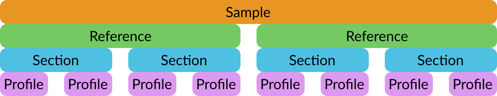

Sample results: Export data from SEISMIC-RNA to SEISMIC-GRAPH
Sample results: Content format
Sample results files are in JSON format. Each file contains information about one sample in four nested layers:
Each layer contains data and metadata.
Metadata fields begin with #, while data fields do not.
Sample layer
The top layer describes the entire sample.
Sample metadata
#sample: Name of the sample.#...: Additional fields from the sample metadata file (see Metadata for Samples).
Sample data
{ref}: Reference layer, keyed by the name of the reference.
Reference layer
The next layer describes one reference to which you aligned the sample.
Reference metadata
#sequence: DNA sequence of the reference.#num_aligned: Number of reads that aligned to the reference.#...: Additional fields from the reference metadata file (see Metadata for References).
Reference data
{sect}: Section layer, keyed by the name of the section.
Section layer
The next layer describes one section of the reference sequence.
Section metadata
#section_start: 5’ coordinate of the section.#section_end: 3’ coordinate of the section.#positions: List of positions in the section; will contain all positions if you use--all-pos, otherwise only unmasked positions.
Section data
{profile}: Profile layer.
Profile layer
The deepest layer describes one profile made from the section (a profile is a series of relationship data, from either the ensemble average or from one cluster).
Profile data (per position)
Most fields of the profile are lists of decimal numbers, each number
corresponding to one position in the section’s #positions field.
cov: Number of reads covering each position.info: Number of informative reads at each position.sub_N: Number of total substitutions at each position.sub_A: Number of substitutions to A at each position.sub_C: Number of substitutions to C at each position.sub_G: Number of substitutions to G at each position.sub_T: Number of substitutions to T at each position.del: Number of deletions at each position.ins: Number of insertions at each position.sub_rate: Fraction of informative reads with substitutions at each position (sub_Ndivided byinfo).
Note
These fields will be computed only if you give a table of data per
position (ending in per-pos.csv).
Profile data (per read)
sub_hist: Histogram of substitutions per read: the first element is the number of reads with 0 substititions, the second the number of reads with 1 substitution, and so on.
Note
This field will be computed only if you give a table of data per
read (ending in per-read.csv.gz).
Profile data (per cluster)
proportion: Proportion of the profile in the ensemble (only for profiles of clusters, not ensemble averages).
Note
This field will be computed only if you give a table of data per
cluster (clust-freq.csv).
Sample results file: Path format
Sample results file extensions
SEISMIC-RNA accepts the following extensions for sample results files:
.json
Sample results path parsing
Sample results files are output in the main output directory with the
name {sample}__webapp.json, where {sample} is the sample name.
Sample results file: Uses
Sample results as input file
Sample results are input files for the seismic-graph web app, which provides additional graphing utilities beyond those in SEISMIC-RNA.
Sample results as output file
seismic export outputs a sample results file for each sample.